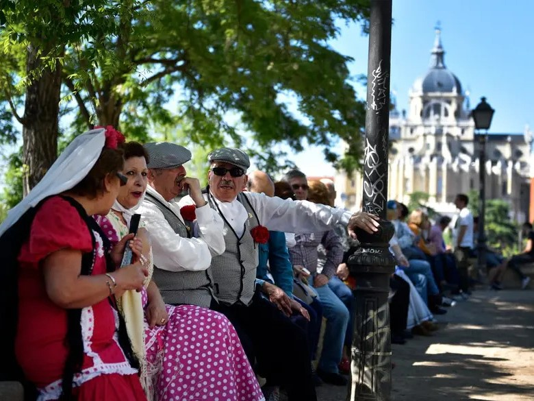
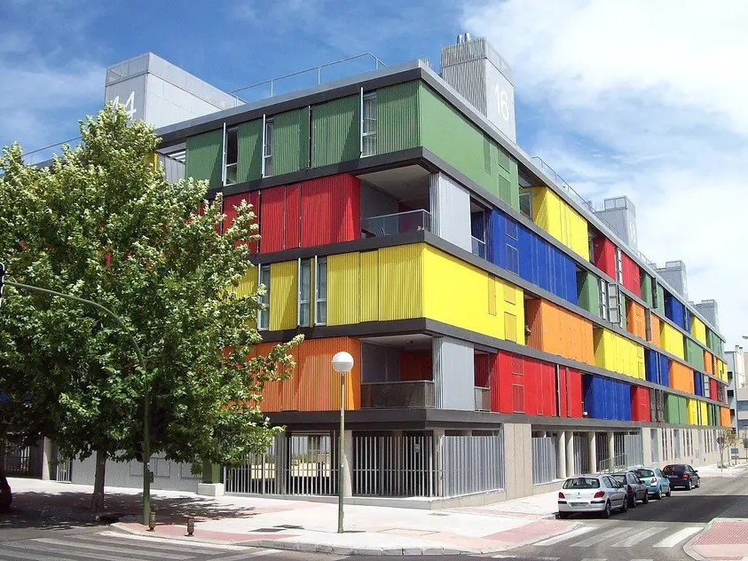
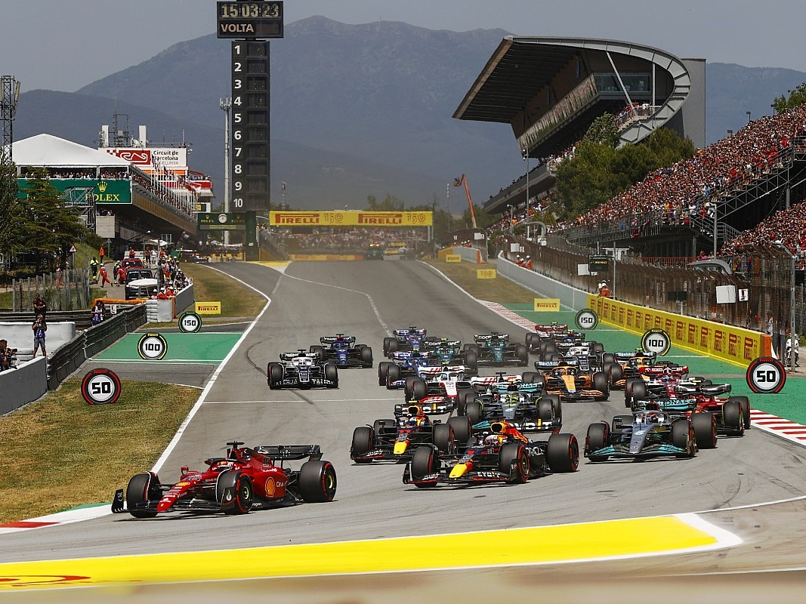

Calendar of events in Madrid 2023-2024
Exhibitions
Los últimos días de Pompeya. La exposición inmersiva (The Last Days of Pompeii. The Immersive Exhibition): Discover the life and customs of the legendary Roman city (Matadero Madrid - Nave 16. Mon-Sun)
Picasso: Sin Título (Picasso: Untitled): Exhibition bringing together 50 works from the artist's final period through the perspectives of 50 contemporary national and international artists (La Casa Encendida. Until Jan 7)
Walking life: Surrealist installation by Spanish artist Okuda San Miguel, reflecting on the paths we choose in life (Museo Gran Vía 15. Until Nov 30)
Fake news: La fábrica de mentiras (Fake news: The factory of lies): Exhibition aiming to address the phenomenon of fake news and provoke reflection on their impact on society (Espacio Fundación Telefónica. Until Jan 7)
En movimiento. Vehículos y carruajes de Patrimonio Nacional (In Motion. Vehicles and Carriages of National Heritage):Journey through the history of carriages in Spain with fifty vehicles used by Spanish monarchs from the 16th to the 20th century (Galería Colecciones Reales. Until Jun 2024)
Eduardo Rosales(1836-1973) al Museo del Prado (Eduardo Rosales (1836-1873) at the Prado Museum): Exhibition commemorating the 150th anniversary of the painter's death, featuring twelve works (Museo del Prado. Until Jan 29)
La ciencia de Pixar (Pixar Science): Exhibition that provides a unique perspective on the process used in the creation of Pixar films (CaixaForum Madrid. May 7 to Sept 8, 2024)
Fairs and congresses
Mercedes-Benz Fashion Week Madrid (Edición febrero): Established designers and young stylists at the first of the two annual events of this prestigious catwalk (IFEMA MADRID - Pavilion 14.1. February 2024)
Feria del Libro de Madrid (Madrid Book Fair): The most important cultural fair in Spanish celebrates its 83rd edition, bringing together numerous visitors and writers (El Retiro Park. Paseo Fernán Núñez. End of May to beginning of June 2024)
South Summit Madrid 2024: Leading global innovation platform focused on business opportunities brings together investors, corporations and founders of successful global startups (La Nave. June 5 to 7)
37. Salón Gourmets: The Hall of the most select gastronomy products, a must-see event for professionals in the sector that in 2023 included Brazil as a guest country of honor (IFEMA MADRID. 2024 - dates to be determined-)
World Olive Oil Exhibition: El encuentro mundial del aceite de oliva congrega a los mayores profesionales del sector (IFEMA MADRID - Pabellón 1. 26 y 27 febrero)
Music
Taylor Swift: The American star will offer a unique concert in Spain as part of her successful The Eras Tour, where she revisits her musical journey (Santiago Bernabéu Stadium. May 30, 2024)
Raphael: One of the most recognized voices in Spanish music takes to the stage again with a new tour where she presents her new album Victoria (WiZink Center. Dec. 16)
Metallica: One of the most prominent thrash metal bands in history offers a double concert date as part of its M72 World Tour (Cívitas Metropolitano Stadium. July 12 and 14, 2024)
Bruce Springsteen: The iconic artist returns to Madrid as part of his European tour with The E Street Band (Cívitas Metropolitano Stadium. June 12, 14, and 17)
Olivia Rodrigo: The three-time Grammy-winning American artist visits Madrid to present "GUTS," one of the most anticipated albums of the year (WiZink Center. June 20, 2024)
Morat: The successful Colombian band kicks off their stadium tour, visiting Madrid for their only concert in Europe (Cívitas Metropolitano Stadium. June 21, 2024)
Musicals
The Lion King: The largest musical production ever presented in Spain celebrates its 12th season. Over 110 million viewers worldwide (Lope de Vega Theater. Tuesdays to Sundays)
Aladdin, the musical: The successful Disney musical that has triumphed worldwide arrives in Spain courtesy of Stage Entertainment (Coliseum Theater. Tuesdays to Sundays)
Mamma Mia! The musical: The celebrated musical featuring ABBA songs returns with a new production, choreography, costumes, and set design (Rialto Theater. Tues-Sun)
Matilda, the musical: New season of this blockbuster production based on Roald Dahl's book (Nuevo Teatro Alcalá. Wed-Sun)
School of Rock, the musical: Leo Rivera stars in the musical based on the popular movie that has been a hit on Broadway (Ibercaja Delicias Space. Tues-Sun)
Malinche: Second season of Nacho Cano's musical about the love story between Malinche and Hernán Cortés (Malinche Space - IFEMA MADRID. Wed-Sun)
Parties and events
China Taste 2024: Gastronomic events where, coinciding with the celebration of the Chinese New Year, you can discover the richness of Chinese cuisine (Various venues. Jan-Feb. To be confirmed)
San Antón Festivities 2024: The Madrid City Council celebrates the day of San Antonio Abad, the patron saint of animals, every year (January 13 to 17, 2024)
Chinese New Year Madrid 2024: On February 10, 2024, the Year of the Dragon will begin, and for the ninth consecutive year, Madrid will celebrate it with a comprehensive program of activities
Carnival Madrid 2024:From Carnival Friday to Ash Wednesday, Madrid surrenders year after year to the festival of identity play, with parties and parades (February 10 to 14, 2024). Don't miss the carnival sardine!
Ellas Crean 2024: A new edition of the festival with a multidisciplinary program that brings together female talents from disciplines such as music, theater, and dance (Various venues. March 2024)
Holy Week 2024: Processions, the San Ginés organ music cycle, saetas, the drumming procession, and many traditional dishes (March 24 to 31, 2024)
Sport
Real Madrid - FC Barcelona (LALIGA EA SPORTS): Gastronomic events where, coinciding with the celebration of the Chinese New Year, you can discover the richness of Chinese cuisine (Various venues. Jan-Feb. To be confirmed)
Meeting Villa de Madrid / World Indoor Tour Gold Madrid 2024: Madrid once again hosts the final event of the World Athletics Indoor Tour Gold (CDM Gallur. February 23, 2024)
Hot Wheels Monster Trucks - Live Glow Party 2024: The new “monster truck” show visits Madrid again as part of its European tour Live Glow Party (WiZink Center. January 3 and 4)
Real Madrid - Bayern Munich (Euroliga. Jornada 14):The white club coached by Chus Mateo faces off against the German team, one of the most prominent in the Bundesliga (WiZink Center. December 14)
Harlem GlobetrottersThe world tour of basketball magicians returns to delight the public with their impossible dunks (WiZink Center. May 10)
World Rugby Seven Series: For the next three years, Madrid will host the Grand Final of the Rugby World Series (Cívitas Metropolitano Stadium. First Grand Final: June 2024)
Kids
Aladdin, the musical: The successful Disney musical that has triumphed worldwide arrives in Spain, courtesy of Stage Entertainment (Teatro Coliseum. Tuesdays to Sundays)
Matilda, the musical: New season of this superproduction based on the book by Roald Dahl (Nuevo Teatro Alcalá. Wednesdays to Sundays)
Christmas Train at the Railway Museum: A magical journey on a historic train with onboard children's entertainment and the presence of the Royal Page (Departure and arrival: Railway Museum. Dec 26, 27, 28, 29, 30, and Jan 2, 3, 4, 5)
Three Kings Parade Madrid 2024:The Three Wise Men visit each house in Madrid from January 5 to 6, but on the previous evening, they parade through the streets in a spectacular procession (January 5, 2024)
Disney On Ice - 100 Years of Magic: An elegant and fun ice show celebrating the 100 years of Disney (WiZink Center. February 8 to 11)
Recent News
- 
Why do people in Madrid live longer than anywhere else in the EU? - LIFE IN SPAIN - 
Madrid's Carabanchel neighbourhood named third coolest in the world - DISCOVER MADRID
Madrid hosts EUROCITIES Digital Forum - DIPLOMACY- 
F1 set to announce new street circuit in Madrid for 2026 - SPORT